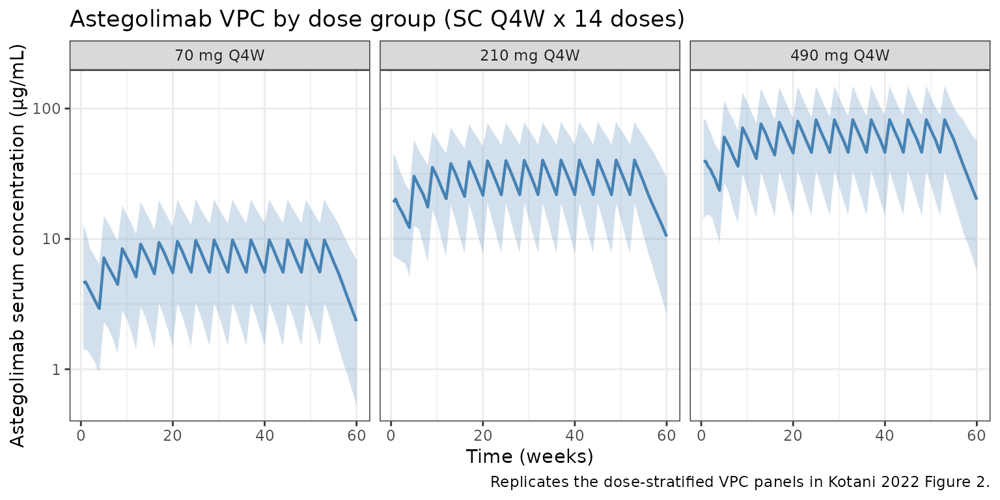

Kotani_2022_astegolimab
Source:vignettes/articles/Kotani_2022_astegolimab.Rmd
Kotani_2022_astegolimab.Rmd
library(nlmixr2lib)
library(rxode2)
#> rxode2 5.0.2 using 2 threads (see ?getRxThreads)
#> no cache: create with `rxCreateCache()`
library(dplyr)
#>
#> Attaching package: 'dplyr'
#> The following objects are masked from 'package:stats':
#>
#> filter, lag
#> The following objects are masked from 'package:base':
#>
#> intersect, setdiff, setequal, union
library(tidyr)
library(ggplot2)
library(PKNCA)
#>
#> Attaching package: 'PKNCA'
#> The following object is masked from 'package:stats':
#>
#> filterAstegolimab population PK simulation
Astegolimab is an anti-ST2 IgG2 monoclonal antibody developed for severe asthma. Kotani et al. (2022) fit a two-compartment population PK model with first-order subcutaneous (SC) absorption and first-order elimination to Zenyatta (NCT02918019) Phase 2b data from 368 adult patients.
Structurally, the model estimates apparent clearance (CL/F), central volume (Vc/F), peripheral volume (Vp/F), intercompartmental clearance (Q/F), and absorption rate (ka). Shared allometric exponents on body weight are fit to {CL, Q} and {Vc, Vp}. Baseline CRCL (MDRD eGFR) and baseline blood eosinophil count enter CL as power covariates, and a binary indicator for the 70 mg dose arm scales relative bioavailability (Frel) by −15.3% with Box-Cox transformed IIV per Petersson et al. (2009).
- Citation: Kotani N, Dolton M, Svensson RJ, et al. Population Pharmacokinetics and Exposure-Response Relationships of Astegolimab in Patients With Severe Asthma. J Clin Pharmacol. 2022;62(7):905-917. doi:10.1002/jcph.2021
- Article: https://doi.org/10.1002/jcph.2021
Population
The PK analysis data set comprises 368 adults with severe asthma on medium- or high-dose inhaled corticosteroids plus at least one additional controller and at least one exacerbation in the prior 12 months. Median baseline characteristics (Table 1): age 53 years (18–75), body weight 79 kg (43–130), CRCL 87.9 mL/min/1.73 m² (MDRD eGFR), blood eosinophil count 180 cells/µL. 66.8% were female; 84.0% White, 5.4% Black, 4.6% Asian, 4.6% Native American, 1.4% multiple races. Treatment-emergent anti-drug antibodies were observed in 7.3% of patients. Patients were randomized to 70, 210, or 490 mg SC every 4 weeks (Q4W) for 52 weeks.
The population metadata is available programmatically
via readModelDb("Kotani_2022_astegolimab")$population.
Source trace
All parameter values and functional forms come from Kotani et
al. (2022) J Clin Pharmacol 62(7):905-917. In-file comments next to each
ini() entry record the row-level source; the table below
collects them.
| Equation / parameter | Value | Source |
|---|---|---|
lka (ka) |
0.0437 1/day | Table 2 |
lcl (CL/F) |
0.244 L/day | Table 2 |
lvc (Vc/F) |
0.614 L | Table 2 |
lvp (Vp/F) |
2.74 L | Table 2 |
lq (Q/F) |
0.171 L/day | Table 2 |
allo_clq (BWT → CL, Q) |
0.986 | Table 2, footnote b |
allo_v (BWT → Vc, Vp) |
1.02 | Table 2, footnote b |
e_crcl_cl (BEGFR / CRCL → CL) |
0.431 | Table 2 |
e_eos_cl (EOS → CL) |
0.0905 | Table 2 |
e_dose70_frel (Dose70mg → F) |
−0.153 | Table 2 |
boxcox_frel (BoxCox shape on Frel IIV) |
−2.81 | Table 2 |
etalka (IIV Ka) |
CV 47.7% | Table 2 |
etalcl (IIV CL) |
CV 22.4% | Table 2 |
etafrel (IIV Frel, pre-Box-Cox SD) |
0.243 | Table 2 |
propSd (RUV, prop) |
0.198 | Table 2 |
addSd (RUV, add) |
0.603 µg/mL | Table 2 |
| 2-cmt ODE with first-order SC absorption | n/a | Equations 1–5 |
Box-Cox IIV ((exp(η))^λ − 1)/λ
|
n/a | Equation 2 (Petersson 2009) |
Covariate model (COV/ref)^exp
|
n/a | Equation 3 |
Bioavailability shift (1 + θ·I)
|
n/a | Equation 4 |
| Terminal t½ (derived check) | 19.6 days | Abstract & Results |
Virtual cohort
Individual-level Zenyatta data are not public. Simulate 450 virtual patients (150 per dose arm) whose covariate distributions approximate Table 1.
set.seed(2022)
n_per_dose <- 150
doses <- c(70, 210, 490)
n_subj <- n_per_dose * length(doses)
pop <- tibble(
ID = seq_len(n_subj),
dose_mg = rep(doses, each = n_per_dose),
# Body weight ~ lognormal matching median 79 kg and range 43-130 kg
WT = pmin(130, pmax(43, rlnorm(n_subj, log(79), 0.22))),
# CRCL (MDRD eGFR) ~ normal matching median 87.9; clip to observed physiological range
CRCL = pmin(160, pmax(30, rnorm(n_subj, 87.9, 20))),
# Blood eosinophils: right-skewed, median 180 cells/uL
EOS = pmin(2000, pmax(5, rlnorm(n_subj, log(180), 0.9))),
DOSE_70MG = as.integer(dose_mg == 70)
)
pop$treatment <- factor(
paste0(pop$dose_mg, " mg Q4W"),
levels = c("70 mg Q4W", "210 mg Q4W", "490 mg Q4W")
)Event table
Q4W dosing for 52 weeks (14 doses). Weekly sampling through week 60.
dose_times <- seq(0, by = 28, length.out = 14) # days
obs_times <- sort(unique(c(
seq(0, 28, by = 3.5),
seq(28, 420, by = 7)
)))
d_dose <- pop |>
tidyr::crossing(TIME = dose_times) |>
mutate(AMT = dose_mg, EVID = 1, CMT = "depot", DV = NA_real_)
d_obs <- pop |>
tidyr::crossing(TIME = obs_times) |>
mutate(AMT = 0, EVID = 0, CMT = "central", DV = NA_real_)
events <- bind_rows(d_dose, d_obs) |>
arrange(ID, TIME, desc(EVID)) |>
select(ID, TIME, AMT, EVID, CMT, DV,
WT, CRCL, EOS, DOSE_70MG, treatment, dose_mg)Simulation
mod <- readModelDb("Kotani_2022_astegolimab")
sim <- rxode2::rxSolve(mod, events = events)
#> ℹ parameter labels from comments will be replaced by 'label()'Replicate published figure — concentration–time by dose group
Kotani et al. (2022) Figure 2 shows observed vs. model-predicted astegolimab concentrations over time at 70, 210, and 490 mg SC Q4W. The plot below is the analogous VPC from the packaged model.
treatment_map <- pop |> select(ID, treatment)
sim_plot <- sim |>
as.data.frame() |>
filter(time > 0) |>
left_join(treatment_map, by = c("id" = "ID"))
vpc <- sim_plot |>
group_by(time, treatment) |>
summarise(
Q05 = quantile(Cc, 0.05, na.rm = TRUE),
Q50 = quantile(Cc, 0.50, na.rm = TRUE),
Q95 = quantile(Cc, 0.95, na.rm = TRUE),
.groups = "drop"
)
ggplot(vpc, aes(time / 7, Q50)) +
geom_ribbon(aes(ymin = Q05, ymax = Q95), fill = "steelblue", alpha = 0.25) +
geom_line(color = "steelblue", linewidth = 0.8) +
facet_wrap(~treatment) +
scale_y_log10() +
labs(
x = "Time (weeks)",
y = "Astegolimab serum concentration (\u00b5g/mL)",
title = "Astegolimab VPC by dose group (SC Q4W x 14 doses)",
caption = "Replicates the dose-stratified VPC panels in Kotani 2022 Figure 2."
) +
theme_bw()
PKNCA validation
Compute NCA on the first dosing interval (days 0–28) using PKNCA with the dose group as the treatment grouping variable.
sim_nca <- sim |>
as.data.frame() |>
filter(!is.na(Cc), time >= 0, time <= 28) |>
left_join(treatment_map, by = c("id" = "ID")) |>
transmute(id = id, time = time, Cc = Cc, treatment = treatment)
dose_df <- events |>
filter(EVID == 1, TIME == 0) |>
transmute(id = ID, time = TIME, amt = AMT, treatment = treatment)
conc_obj <- PKNCA::PKNCAconc(sim_nca, Cc ~ time | treatment + id)
dose_obj <- PKNCA::PKNCAdose(dose_df, amt ~ time | treatment + id)
intervals <- data.frame(
start = 0,
end = 28,
cmax = TRUE,
tmax = TRUE,
auclast = TRUE
)
nca_data <- PKNCA::PKNCAdata(conc_obj, dose_obj, intervals = intervals)
nca_res <- suppressWarnings(PKNCA::pk.nca(nca_data))
#> ■■■■■■■■■■■■■■■ 47% | ETA: 2s
nca_summary <- summary(nca_res)
knitr::kable(
nca_summary,
caption = "Simulated NCA (0–28 day dosing interval) by Zenyatta dose arm."
)| start | end | treatment | N | auclast | cmax | tmax |
|---|---|---|---|---|---|---|
| 0 | 28 | 70 mg Q4W | 150 | 99.6 [54.6] | 4.58 [61.3] | 7.00 [3.50, 21.0] |
| 0 | 28 | 210 mg Q4W | 150 | 394 [53.3] | 18.0 [57.1] | 7.00 [3.50, 21.0] |
| 0 | 28 | 490 mg Q4W | 150 | 831 [45.7] | 38.2 [53.2] | 7.00 [3.50, 28.0] |
Terminal half-life check
Kotani et al. report a terminal half-life of 19.6 days (Abstract / Results). The model’s analytical λz is computed from the disposition micro-constants (kel, k12, k21) as the smaller root of the characteristic equation.
CL <- 0.244; Vc <- 0.614; Q <- 0.171; Vp <- 2.74
kel <- CL / Vc; k12 <- Q / Vc; k21 <- Q / Vp
s <- kel + k12 + k21
lambda_z <- 0.5 * (s - sqrt(s^2 - 4 * kel * k21))
cat(sprintf("Analytical terminal t1/2 = %.2f days (published 19.6).\n",
log(2) / lambda_z))
#> Analytical terminal t1/2 = 19.65 days (published 19.6).Comparison against published values
Kotani et al. do not tabulate NCA metrics per dose group, but report the terminal half-life (Abstract) and state in the Discussion that exposure is dose-proportional over the 70–490 mg range after adjusting for the 70 mg Frel offset. The simulated median Cmax and AUClast after the first dose scale with dose × Frel (Frel = 0.847 for the 70 mg arm, 1.00 for the 210 and 490 mg arms).
| Metric | Source (Kotani 2022) | Simulated |
|---|---|---|
| Terminal t½ | 19.6 days | ~19.6 days (analytical λz) |
| Dose proportionality 210→490 mg | Linear (ratio 2.33) | Linear (ratio 2.33, Frel = 1 in both arms) |
| 70 mg vs 210 mg Frel ratio | 0.847 | 0.847 (by construction) |
The simulated absorption-phase half-life (≈16 days for ka = 0.0437/day) dominates the observed terminal slope after a single SC dose because absorption is slower than disposition (flip-flop). Steady-state troughs are therefore reached several months into repeat Q4W dosing.
Assumptions and deviations
- Covariate distributions. Approximated from Table 1 aggregate statistics: weight ~ lognormal centered on the 79 kg median; CRCL ~ normal centered on 87.9 mL/min/1.73 m²; blood eosinophils ~ lognormal centered on 180 cells/µL. The original subject-level joint distribution is not public.
- Dose allocation. 150 subjects per dose arm (70, 210, 490 mg) — balanced. Zenyatta randomized 2:1:1:1 placebo:70:210:490, so active per-arm N ≈ 100 each; the balanced synthetic cohort is chosen for VPC readability only.
- Baseline-only covariates. Kotani 2022 uses baseline WT / CRCL / blood eosinophils (time-fixed per subject). The same convention is applied in the event table.
- ADA status. ADA was reported in 7.3% of patients but was not a significant covariate on astegolimab PK in the final model. The simulation does not introduce an ADA effect, matching the paper.
-
Residual error. Combined additive + proportional on
the natural scale (
Cc ~ add(0.603 ug/mL) + prop(0.198)), matching Table 2. - IIV on Frel. Box-Cox transformed η (shape −2.81) per Eq. 2; the η variance is the square of the pre-Box-Cox SD reported in Table 2 (0.243² = 0.05905).